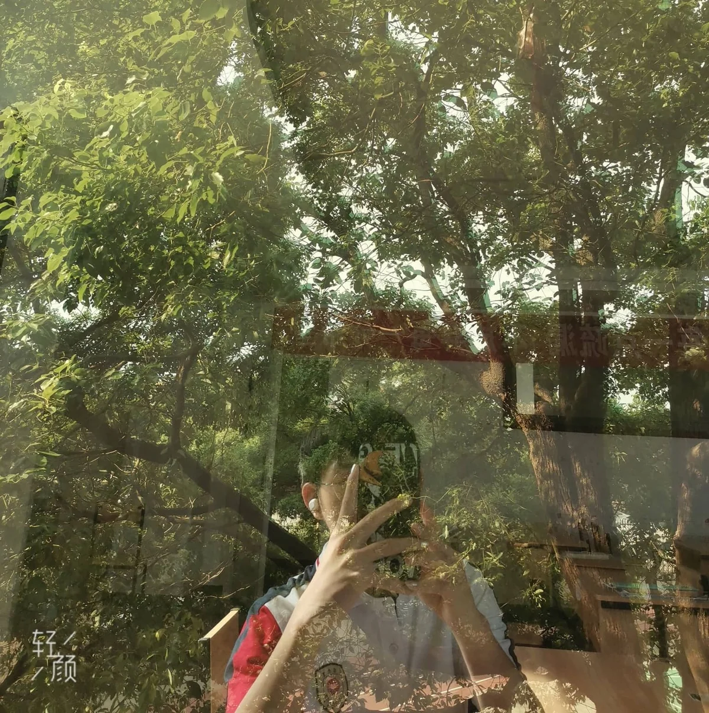
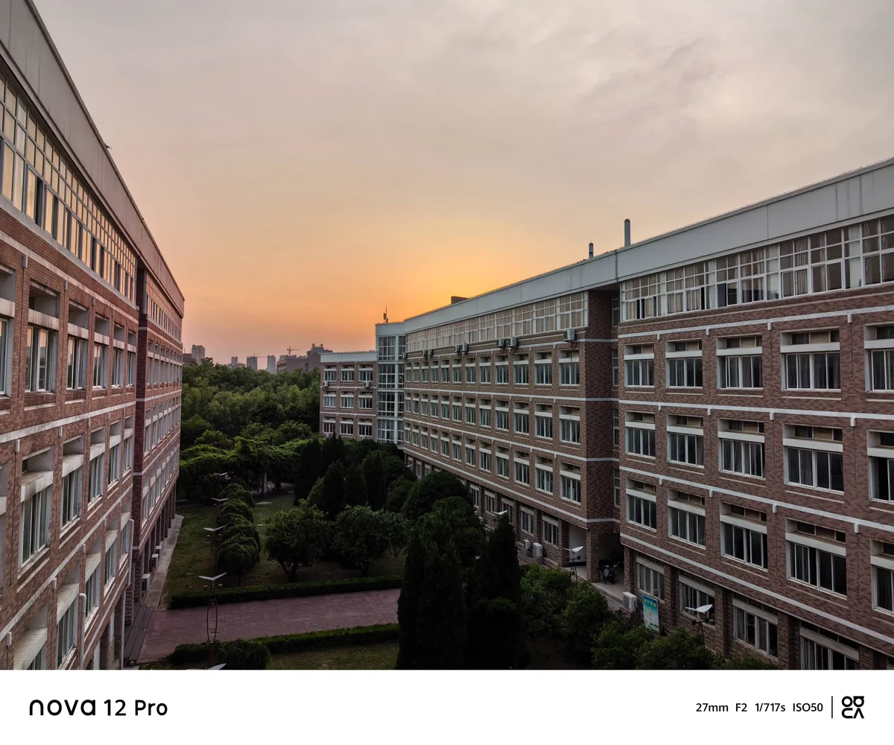
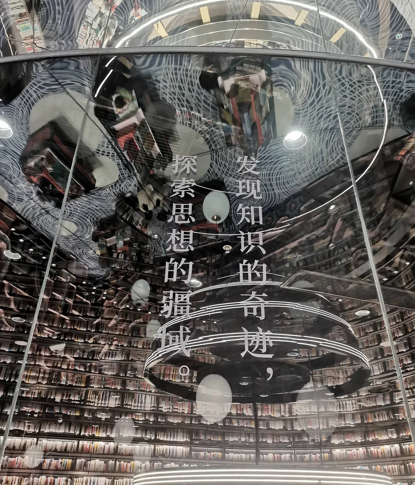
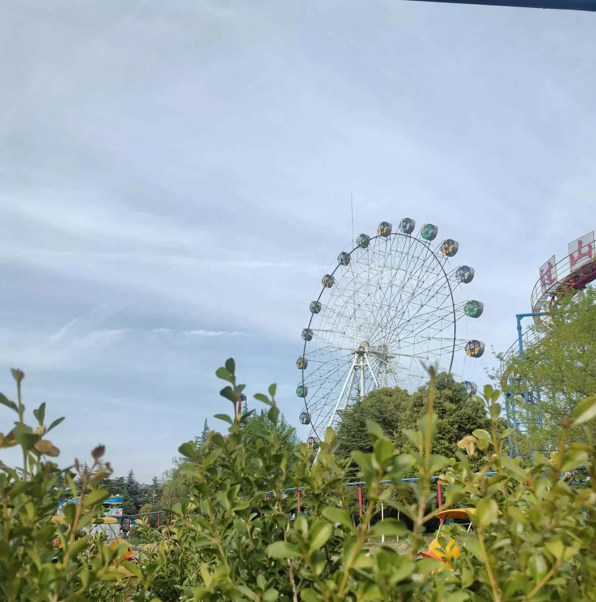
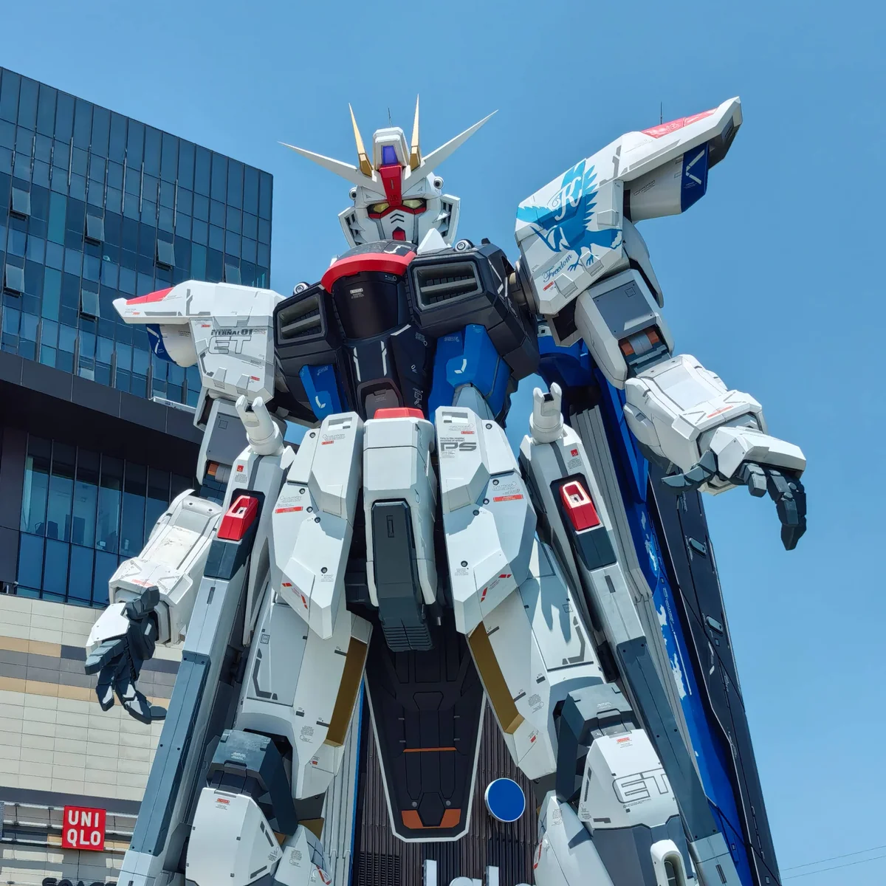
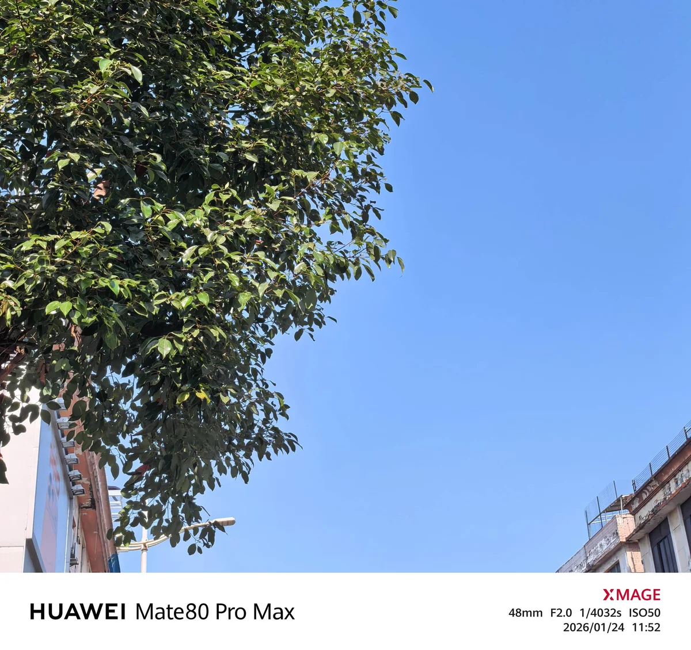

一些关于我的故事
一些我做过的东西
一路走来的脚印
写作与成长的思考
写作对我的学习和成长产生了深远的影响。首先，它促使我更加深入地学习和理解我所感兴趣的主题。为了写出一篇有深度的文章，我需要做大量的研究和思考，这个过程极大地丰富了我的知识储备。
其次，写作帮助我理清思路和巩固记忆。将学到的知识用自己的话写出来，可以让我更好地理解和记住这些概念。这种输出的方式比单纯的阅读或听课更能加深印象。
此外，写作也是一种自我反思和自我提升的过程。通过写作，我可以回顾自己的学习历程，发现自己的不足，并设定新的学习目标。同时，它也是自我表达的一种方式，让我能够分享自己的想法和观点，与他人交流。
最后，写作让我建立了一个网络社区，在这里我可以与其他热爱学习的人交流和分享。这种社区的支持和鼓励对我是极大的动力，让我在学习和成长的路上不再孤单。
总的来说，写作不仅提高了我的学习能力，也促进了我的个人成长。它是我学习旅程中的重要伴侣，帮助我不断前进。
拾光成句，光影留痕 · 点击图片全屏查看






这里是图片的详细介绍文字，可以描述图片的内容、拍摄背景、意义等信息。